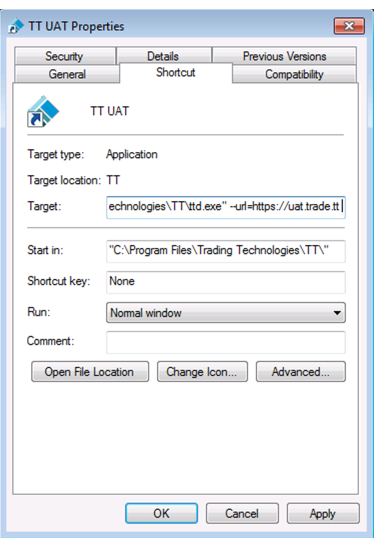
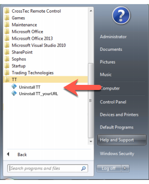

Installing a new TT Desktop instance
To install an instance of TT Desktop that uses a different environment:
-
Download TT Desktop from https://trade.tt/desktop/download.
-
Run the downloaded installer to install TT Desktop.
-
If you want too retain a shortcut to the current production version of TT, create a copy of the shortcut on your desktop.
-
Rename the copied shortcut, as desired, such as TT Desktop UAT.
-
Update the new shortcut's Target field.
-
From the shortcut's context menu, select Properties.

-
Add the the following to the end of the Target field: --url=https"//uat.trade.tt. Be sure to use two dashes.
-
Click Apply, then OK.
You can launch the TT Desktop application in the desired environment by double-clicking the corresponding icon.
Uninstalling a TT Desktop instance
If you want to keep only one instance of TT Desktop, you can remove either instance by opening the Windows Start menu, navigating to the TT folder and selecting the appropriate Uninstall item.
